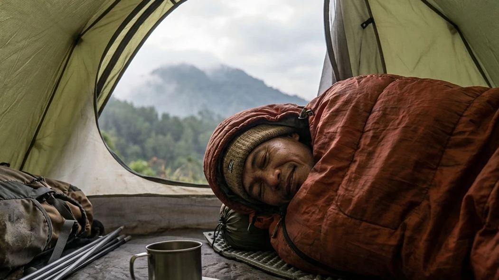

1. Tidur di Alam Liar: Mitos Penderitaan vs Realita
Ada sebuah miskonsepsi besar yang beredar luas di kalangan masyarakat awam: bahwa berkemah di alam bebas identik dengan penderitaan. Banyak yang membayangkan tubuh akan sakit karena harus tidur di atas tanah berbatu, tulang akan bergemeretak menahan dinginnya angin gunung, dan kita akan terbangun di pagi hari dengan kondisi masuk angin parah. Kenyataannya, jika Anda mengalami hal-hal tersebut saat berkemah, itu bukanlah kesalahan alam, melainkan murni karena kesalahan Anda dalam mempersiapkan perlengkapan dasar kelangsungan hidup (survival gear).
Melakukan pencarian literasi terkait Panduan Memilih Alat Tidur Camping untuk Kenyamanan Maksimal Bermalam di Alam Bebas adalah sebuah langkah fundamental yang sangat cerdas sebelum Anda berkemas menuju gunung. Alam terbuka memiliki hukum fisikanya sendiri; tanah akan selalu menyerap panas tubuh Anda, dan angin malam akan selalu mencari celah untuk menembus kulit. Melalui artikel edukasi yang amat komprehensif ini, kita akan membongkar rahasia para pendaki profesional dalam meracik "Sistem Tidur" (Sleep System) yang sempurna. Kita akan membahas tuntas spesifikasi matras yang aman, anatomi sleeping bag penahan badai, hingga trik-trik kecil yang akan memastikan pengalaman tidur Anda di dalam tenda dome terasa sama pulasnya dengan tidur di kasur empuk kamar Anda sendiri.
2. Mengapa Sistem Tidur (Sleep System) Sangat Krusial?
Di dunia petualangan alam bebas, sekadar membawa jaket tebal belum cukup untuk menjamin Anda akan selamat melewati malam. Anda membutuhkan sebuah sistem pelindung terpadu yang sering disebut Sleep System.
Mencegah Ancaman Serius Hipotermia
Pada malam hari, kawasan dataran tinggi (seperti Batu Malang atau Gunung Arjuno) bisa mengalami penurunan suhu secara ekstrem hingga menyentuh angka belasan atau bahkan satu digit derajat Celcius. Saat tubuh beristirahat (tidur), sistem metabolisme dan detak jantung kita secara otomatis akan melambat, sehingga produksi panas internal tubuh ikut menurun drastis. Tanpa alat tidur yang mampu memerangkap suhu panas tersebut, tubuh akan mengalami kehilangan kalori secara masif yang dapat memicu risiko hipotermia—sebuah kondisi penurunan suhu inti tubuh yang dapat berujung pada kematian.
Memulihkan Energi (Recovery) untuk Aktivitas
Tujuan utama Anda berlibur atau menjelajah alam adalah untuk menikmati keindahannya. Jika malam hari Anda dihabiskan dengan menggigil kedinginan tanpa bisa memejamkan mata sedetik pun, keesokan harinya fisik Anda akan hancur lebur. Kelelahan ekstrem, sakit kepala, dan hilangnya mood liburan adalah dampak nyata dari kualitas tidur yang buruk. Alat tidur yang tepat memastikan otot-otot Anda mendapatkan fase pemulihan (recovery) yang maksimal sehingga Anda siap menyambut indahnya matahari terbit (sunrise) dengan senyuman lebar.
BACA JUGA (Panduan Alat Kemah):
3. Komponen Utama dalam Alat Tidur Camping
Sebuah Sleep System yang baik tidak terdiri dari satu barang saja, melainkan gabungan dari dua komponen vital yang saling melengkapi satu sama lain.
Matras Camping (Isolator Suhu Tanah)
Banyak pemula mengira fungsi matras hanyalah sebagai alas agar punggung tidak sakit terkena batu. Itu salah besar! Fungsi utama matras camping adalah sebagai Isolator (penyekat suhu). Hukum termodinamika (konduksi) menyatakan bahwa panas akan selalu mengalir ke tempat yang lebih dingin. Karena tanah gunung jauh lebih dingin dari tubuh Anda, ia akan "menyedot" hawa panas Anda tanpa ampun. Sehebat apa pun sleeping bag Anda, tanpa adanya matras yang memblokir kontak langsung dengan dasar tenda, Anda akan tetap membeku.
Kantong Tidur (Sleeping Bag) Penahan Panas
Jika matras berfungsi melindungi tubuh bagian bawah dari serangan dinginnya tanah, maka Sleeping Bag bertugas melindungi tubuh bagian atas, samping, dan udara di sekeliling Anda dari sergapan hawa dingin luar (konveksi). Kantong tidur ini bekerja seperti sebuah oven; ia tidak menghasilkan panas sendiri, melainkan bertugas menangkap dan memantulkan kembali radiasi panas yang dipancarkan oleh suhu tubuh Anda agar tidak kabur ke udara bebas.
4. Panduan Memilih Matras Camping yang Tepat
Berdiri di depan rak toko peralatan *outdoor* bisa membuat pusing karena banyaknya varian matras. Mari kita bedah jenis-jenis matras yang paling umum digunakan.
Matras Spons (Foam Pad) yang Klasik dan Tangguh
Ini adalah jenis matras sejuta umat yang sering dibawa dengan cara digulung dan diikat di luar ransel (carrier). Matras berbahan busa Eva (Eva Foam) ini sangat murah, amat ringan, dan yang paling penting: tangguh. Ia tidak akan bocor meskipun terkena ranting atau bebatuan tajam. Kekurangannya adalah volumenya yang memakan tempat besar serta tingkat keempukannya yang terbilang minimalis untuk standar tidur yang mewah.
Matras Angin (Air Pad) untuk Kenyamanan Ekstra
Bagi Anda yang mencari kenyamanan punggung layaknya tidur di kasur pegas, matras udara (air sleeping pad) adalah dewanya. Saat dikempeskan, ukurannya sangat ringkas sebesar botol minum. Saat dipompa, ia memberikan bantalan udara setebal 5 hingga 10 sentimeter yang sangat empuk dan mengisolasi tubuh jauh dari permukaan tanah. Namun, kelemahannya terletak pada sifatnya yang manja; jika tertusuk duri kecil saja, ia akan bocor dan kempes seketika, membuat Anda harus tidur beralaskan kain tipis sisa matras tersebut.
Kewajiban Memakai Matras Aluminium Foil
Trik rahasia para pendaki profesional adalah menggunakan sistem lapisan (layering) pada matras. Lapisan paling bawah yang langsung menyentuh lantai tenda wajib menggunakan Matras Aluminium Foil. Sisi mengkilapnya (menghadap ke atas) sangat superior dalam memantulkan kembali suhu panas tubuh Anda dan secara total memblokir radiasi uap dingin dari tanah pegunungan. Baru di atas lembaran *foil* tersebut, Anda tumpuk dengan matras spons atau matras angin Anda.

Berada di dalam balutan sleeping bag bertipe mummy memberikan perlindungan termal yang paripurna, menjaga suhu inti tubuh tetap stabil meski di tengah hembusan badai pegunungan.5. Panduan Memilih Sleeping Bag Sesuai Kebutuhan
Kesalahan fatal yang kerap terjadi adalah membawa selimut rumah atau *bed cover* biasa untuk berkemah. Selimut rumah memiliki rongga yang terlalu longgar sehingga angin pegunungan akan dengan mudah menyusup masuk.
Perhatikan Rating Suhu (Temperature Rating)
Saat membeli sleeping bag (SB), jangan hanya melihat desain warnanya. Perhatikan label Temperature Rating (Batas Suhu) yang tertera. Ada angka Comfort (batas suhu di mana Anda tidur paling nyaman), Limit (batas suhu di mana Anda mulai merasa dingin namun masih aman), dan Extreme (batas suhu bertahan hidup, Anda menggigil namun tidak mati). Untuk pegunungan tropis seperti di Batu, pilihlah SB dengan Comfort Rating di rentang 10°C hingga 15°C.
Bentuk Mummy vs Tikar (Rectangular)
Secara umum ada dua desain potongan kantong tidur. Tipe Rectangular (persegi panjang) menyerupai tikar lipat; memberikan kebebasan kaki untuk bergerak, namun rongga udaranya yang besar membuat insulasi panasnya kurang maksimal (cocok untuk camping santai di dataran rendah). Tipe Mummy (mengerucut di bagian kaki dan memiliki penutup tudung kepala) adalah desain mutlak untuk daerah pegunungan. Bentuknya yang ketat memeluk lekuk tubuh meminimalisir volume ruang kosong (dead space), sehingga tubuh Anda tidak perlu membakar kalori ekstra untuk menghangatkan ruang kosong tersebut.
Pemilihan Bahan Isian (Polar, Dacron, atau Bulu Angsa)
Bahan Fleece (Polar) sangat lembut di kulit, murah, dan hangat, namun bobotnya cukup berat. Bahan Dacron (serat sintetis) adalah pilihan ideal sejuta umat karena harganya menengah, mudah dicuci, dan tetap mampu memberikan insulasi meski dalam kondisi sedikit lembap. Sementara Bulu Angsa (Down) adalah kasta tertinggi yang amat sangat hangat dan bisa dikompresi (dilipat) menjadi sangat kecil sebesar kepalan tangan, namun harganya mencapai jutaan rupiah dan akan kehilangan fungsi hangatnya secara total bila basah terkena air.
6. Tips Tambahan untuk Kenyamanan Maksimal Bermalam
Meskipun alat tempur Anda sudah kelas satu, penerapannya di lapangan membutuhkan trik (hacks) khusus agar fungsi alat tersebut bekerja maksimal.
Gunakan Pakaian Tidur yang Tepat (Layering)
Jangan pernah tidur dengan pakaian basah oleh keringat siang hari. Gantilah pakaian Anda khusus untuk tidur. Gunakan pakaian berlapis (layering) berbahan dry-fit dan *fleece* hangat. Wajib hukumnya mengenakan kupluk (beanie hat) saat masuk ke dalam sleeping bag, karena hampir 40% suhu panas tubuh manusia menguap terbuang melalui bagian atas kepala.
Jangan Tidur dalam Keadaan Perut Kosong
Sleeping bag tidak mengeluarkan panas, ia hanya memantulkan panas tubuh Anda. Sumber panas tubuh Anda berasal dari hasil pembakaran kalori makanan (metabolisme). Jika Anda tidur dengan perut lapar, tubuh Anda tidak memiliki "bahan bakar" untuk dibakar, sehingga Anda akan tetap menggigil kedinginan di dalam sleeping bag semahal apa pun. Konsumsilah minuman manis hangat (seperti cokelat atau jahe) dan camilan berkalori sebelum memejamkan mata.
BACA JUGA (Opsi Kemah Praktis):
7. Kesimpulan
Menaklukkan dinginnya malam di pegunungan bukan berarti Anda harus memiliki fisik bak pahlawan super; kuncinya murni terletak pada penguasaan literasi terhadap alat yang Anda bawa. Melalui paparan detail Panduan Memilih Alat Tidur Camping untuk Kenyamanan Maksimal Bermalam di Alam Bebas ini, kita belajar bahwa menyusun Sleep System yang mumpuni (berupa matras foil berlapis spons dan sleeping bag tipe mummy) adalah pertahanan terakhir Anda untuk mencegah hipotermia. Jika meramu peralatan dan logistik tersebut dirasa terlalu membebani waktu atau keuangan Anda, jangan ragu untuk memanfaatkan layanan kemah berkonsep Comfort Camping yang ditawarkan oleh pengelola seperti Batu Sunrise Camp, di mana seluruh tenda double layer tebal dan alat tidur yang wangi telah dirakit sempurna untuk Anda. Cukup siapkan bekal kehangatan, nikmati syahdunya malam pegunungan, dan bangkitlah keesokan harinya dengan energi penuh untuk menyongsong pesona sunrise yang menyilaukan mata.